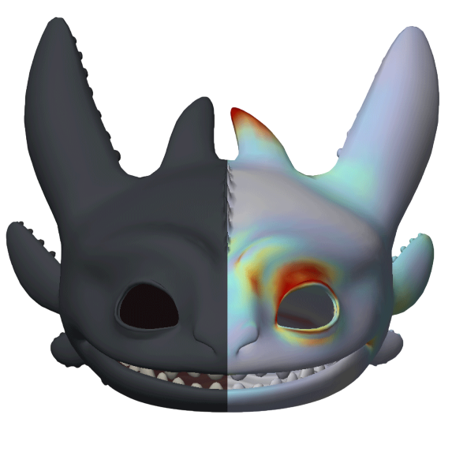

|
Dalton Omens I'm a PhD student in Computer Science at the Stanford University AI Lab, advised by Ron Fedkiw, with plans to graduate in Summer 2025. I received my B.S. in Electrical Engineering and Computer Science at UC Berkeley in 2020. I have worked with research teams at Epic Games, SONY, Unity, and Blizzard on cutting-edge computer graphics and AI initiatives. I have also interned at NVIDIA. |
{kind=link}
ResearchI'm currently interested in the reconstruction and animation of digital humans and other virtual characters, especially involving the use of novel AI techniques. More broadly, I love creating spectacular experiences by realizing virtual worlds. Most of all, I enjoy working with artists to help them realize their vision. |
|
|
A Neural-Network-Based Approach for Loose-Fitting Clothing
Yongxu Jin, Dalton Omens, Zhenglin Geng, Joseph Teran, Abishek Kumar, Kenji Tashiro, Ron Fedkiw arXiv, 2024 paper / arXiv / video To simulate loose-fitting clothing, separating physically simulated dynamic modes from neurally simulated quasistatic modes aids generalization when paired with a well-crafted coarse physics model such as rope chains. |
|
|
Democratizing the Creation of Animatable Facial Avatars
Yilin Zhu, Dalton Omens, Haodi He, Ron Fedkiw arXiv, 2024 paper / arXiv Obtaining geometry and texture from a couple selfies to create a personalized animation rig. A Simon Says process is used to match the user's expressions. |

|
Fast and Feature-Complete Differentiable Physics for Articulated Rigid Bodies with Contact
Keenon Werling, Dalton Omens, Jeongseok Lee, Ioannis Exarchos, C. Karen Liu RSS, 2021 project page / arXiv / code A differentiable physics engine that supports Lagrangian dynamics and hard contact constraints for articulated rigid body simulation, offering analytic gradients through features typically only available in non-differentiable simulators. |
|

|
Fast and Deep Facial Deformations
Stephen Bailey, Dalton Omens, Paul DiLorenzo, Ioannis Exarchos, James F. O'Brien SIGGRAPH, 2020 project page / paper / code A method using convolutional neural networks for approximating the mesh deformation of complex facial rigs. Fast evaluation allows for interactive inverse kinematics and real-time performance capture. |
Education |
|
Stanford University, 2020 - 2025
Ph.D. in Computer Science Thesis: Calibrating Facial Avatars and Trackers for Performance Retargeting |
|
|
University of California, Berkeley, 2016 - 2020
B.S. in Electrical Engineering and Computer Science, summa cum laude |